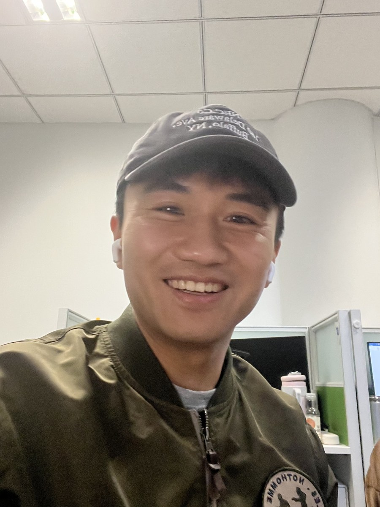
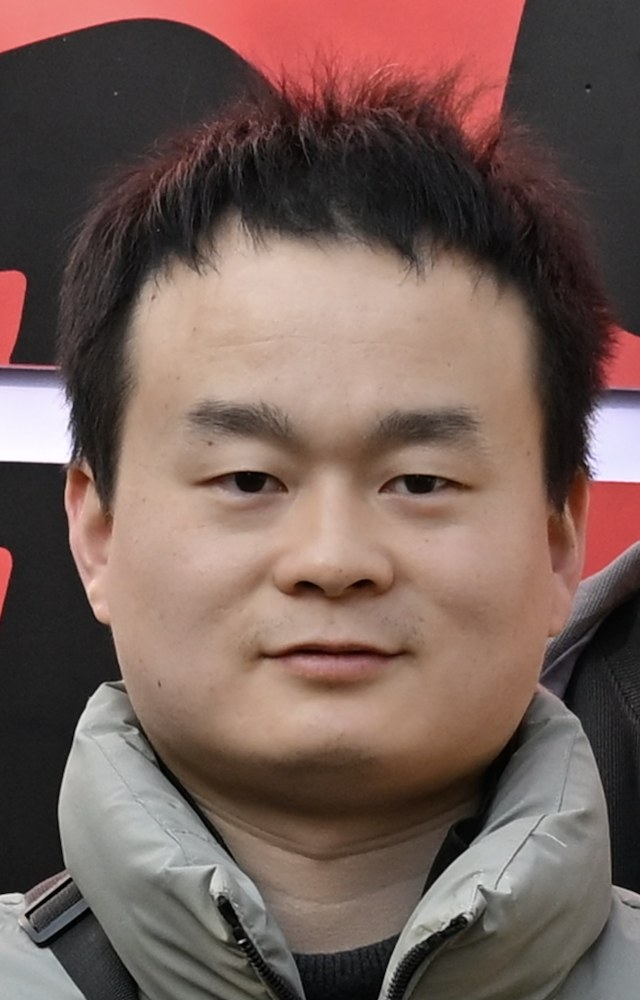
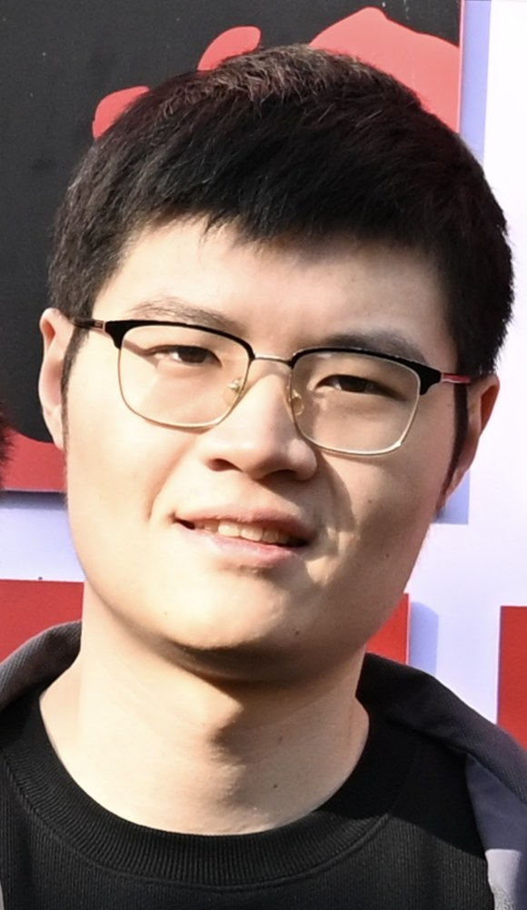

副教授，博士生导师
Functional Materials · Optoelectronics · Biomedicine
新型功能材料 设计制备 与器件应用
聚焦新型功能材料的设计、制备、组装及其在信息功能器件、生物医药、能源与环境等方向的应用， 面向硬科技需求探索从材料创制到多光谱器件集成的研究路径。
30+
论文发表于 Nat. Photon.、Nat. Commun.、Adv. Mater. 等期刊
1
国际专利申请
本科生及研究生课程
南京大学现代工程与应用科学学院
Principal Investigator
导师个人资料
牛善远老师本科毕业于南京大学材料科学与工程系，随后在美国南加州大学获得材料科学博士学位， 2019 至 2021 年在斯坦福大学从事博士后研究，2022 年起任南京大学副教授、博士生导师。
南京大学
材料科学与工程系
美国南加州大学
材料科学
斯坦福大学
博士后学者
南京大学
副教授，博士生导师
Research Focus
研究方向
新型功能材料
面向电学、光学、热学和生物医学等功能需求，开展材料设计、制备与组装研究。
信息功能器件
围绕光电探测、红外光学、多光谱联用等方向，探索材料结构与器件性能之间的关系。
能源、环境与生物医药
推动先进功能材料在新能源、环境检测、生物医药等场景中的应用转化。
Selected Projects & Honors
科研项目与代表荣誉
主持项目
- 科技部重点研发计划青年科学家项目，2024-2027
- 国家自然科学基金面上项目，2023-2026
- 国家自然科学基金优秀青年科学基金（海外），2022-2024
奖励荣誉
- 2022 MFD Early Career Achievement Award
- 2021 海外高层次人才引进计划（青年）
- 2019 USC PhD Achievement Award
- 2018 国家优秀自费留学生奖学金
Team & Opportunities
课题组成员与招生招聘

Doctoral Student
魏迪
博士研究生，研究方向为晶体生长与绝缘陶瓷。

Doctoral Student
严双朋
博士研究生，研究方向为硫族钙钛矿。

Graduate Student
刘昕
研究生，研究方向为光学功能晶体。
硕士、博士研究生
课题组每年招收硕士、博士研究生 3-4 人，欢迎材料、物理、化学、电子等背景同学联系。
博士后与科研人员
诚聘晶体生长、介孔材料、光电探测及高压物理背景博士及博士后 2-3 名。
交叉合作
期待与信息功能器件、生物医药、能源与环境等方向的团队开展合作研究。
Contact
欢迎加入牛善远课题组
申请者可将个人简历、研究兴趣和代表成果发送至导师邮箱。